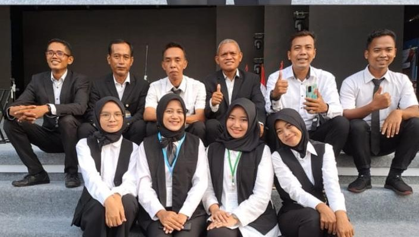
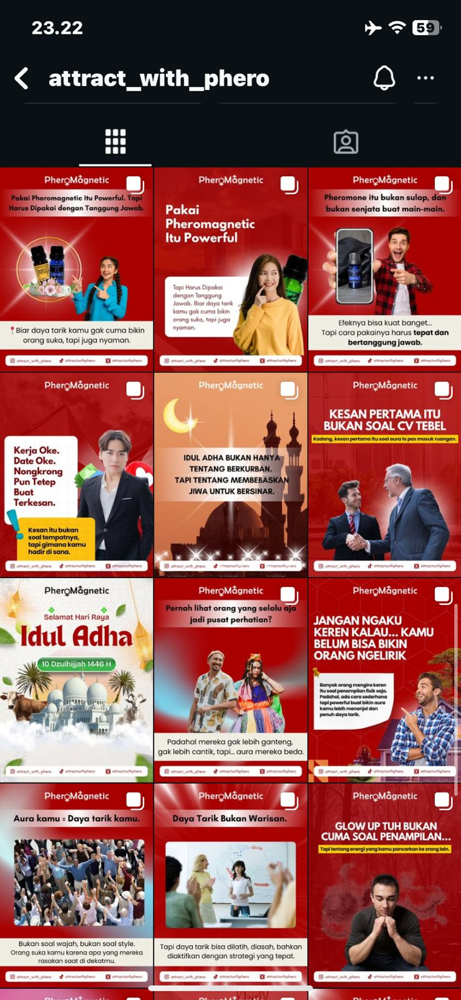
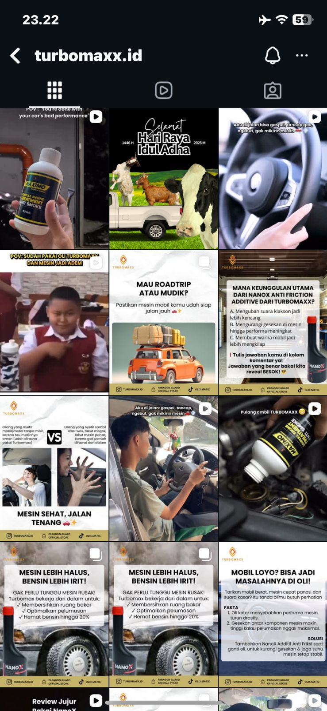
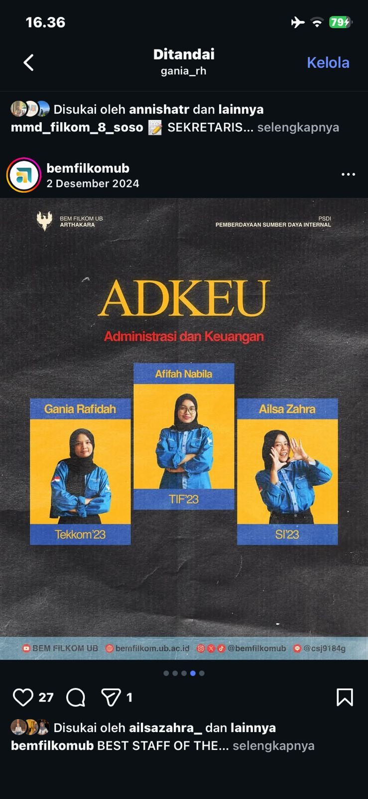
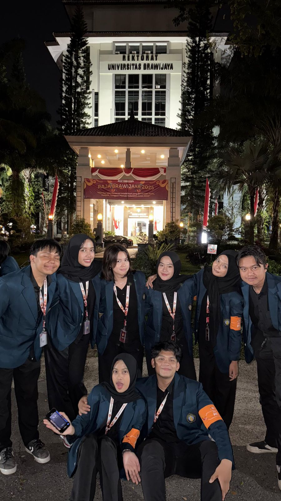
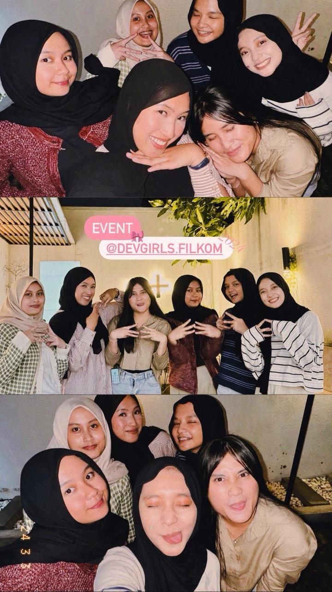
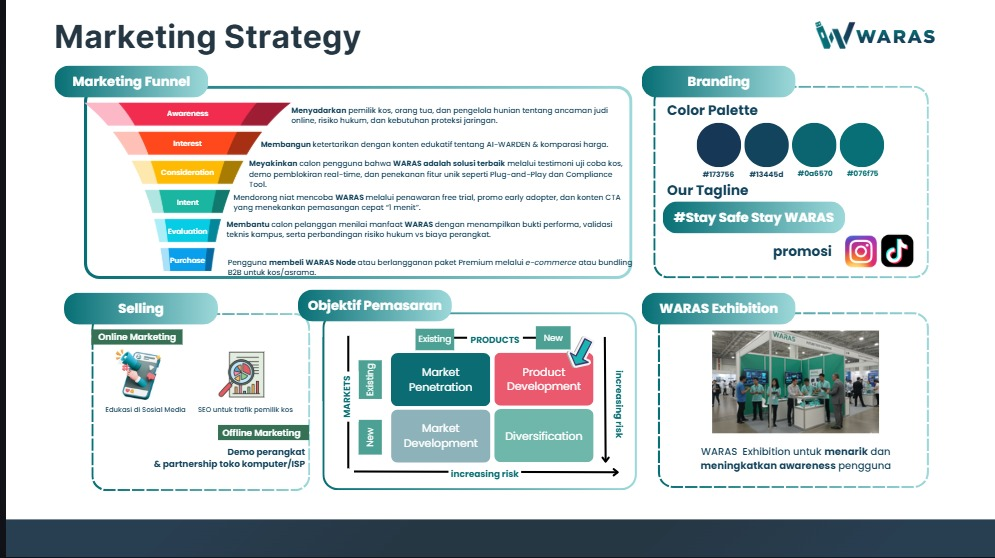

Social media operations
Audience replies, LinkedIn/X interaction handling, daily response tracking, brand tone consistency, and simple escalation notes.
Content, social media, and event operations
Hi, I'm Gania. I work across social media admin, campaign planning, copywriting, event coordination, participant flow, and public-facing communication. I like work that looks simple on the outside because the messy details were handled early.


What I handle
My content work is less about sounding loud and more about making the message usable: what the audience should notice, what format fits the platform, and what the team needs before design or publishing starts.
Audience replies, LinkedIn/X interaction handling, daily response tracking, brand tone consistency, and simple escalation notes.
Content calendars, idea banks, campaign mapping, product education angles, polling, quizzes, storytelling formats, and hooks.
Short-form copy, caption direction, TikTok and Instagram campaign briefs, PIC notes, and readable handoff for creative teams.
Post lists, interaction logs, attendance sheets, participant validation, PDF exports, and documentation that stays useful after the activity ends.
Handled more than 1,000 audience interactions across X and LinkedIn while helping produce over 150 posts, articles, captions, and rebranding materials. I worked on keeping public replies steady, tracking what needed a response, and making sure daily content did not drift away from the brand tone.
Developed 50+ content ideas and campaign concepts across polling, quizzes, storytelling, and product education formats. I helped turn product messages into social media angles the audience could understand quickly.
Produced 15+ Instagram and TikTok campaign briefs, including hooks, short-form copy, caption directions, and platform-specific angles. I also became PIC for several campaign posts from planning to publication.

Event operations
Rundowns, staff shifts, participant records, speaker reminders, and guest movement all look small until one of them breaks. My event work sits in those details: keeping people informed, checking the flow, and closing the loop after the event.
Led around 70 operational staff during a 30-day national-scale event. I handled attendance checks, shift allocation, field coordination, short briefings, handoffs, and escalation when visitor traffic or field conditions changed.
Served as Core Team for Leader of Tomorrow 6.0 and handled administrative responsibility as Pengguna Anggaran for Leader of Tomorrow Chapter 2. The work covered presensi, PUMK documents, LPJ flow, spending records, transfer archives, and faculty-level reporting.

Processed and checked 800+ participant records for attendance, QR usage, validation, and event reporting. The role connected spreadsheet hygiene with real event flow because every record had to work when participants arrived.

Managed online KarsaCita sessions with 50+ participants on average, supported Dev Girls UI/UX workshops and mentoring with Skilvul, and helped guide Singapore Polytechnic and Vietnam campus delegation visits.

Campaign and business story
WARAS is included here because my strongest contribution was not only the product idea, but also the way the market problem, target segment, pricing, financial model, and presentation story were made understandable for a competition setting.
Finalist - PRISMA 2025
WARAS is a plug-and-play micro-gateway concept for safer shared internet access in kos, schools, and family networks. For the business plan, I helped shape the value proposition, customer segment, pricing logic, channel strategy, proposal, financial analysis, and pitch materials.


CV and contact
I made a separate CV version for this direction so recruiters do not need to read through the full technical portfolio first. It keeps the same real experience, but frames it around campaign output, event flow, audience handling, and measurable coordination work.